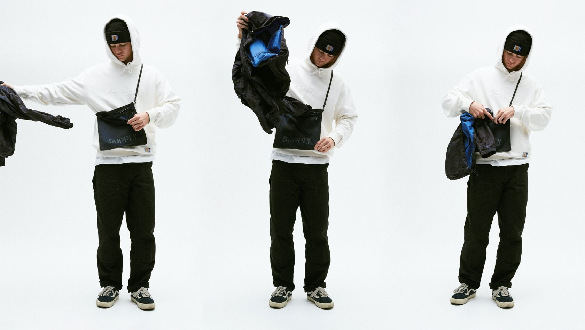
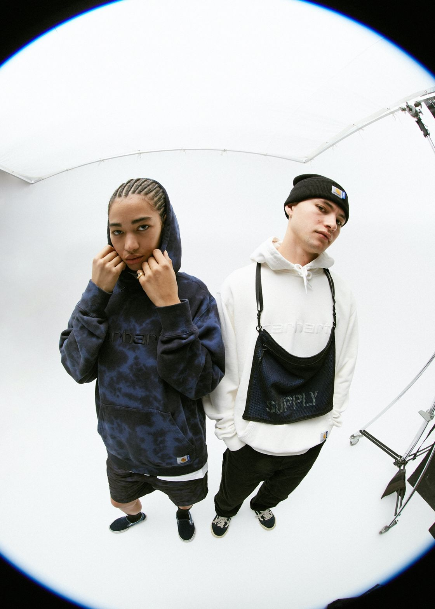
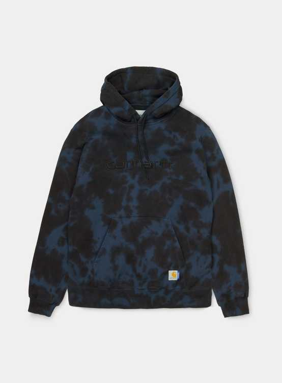
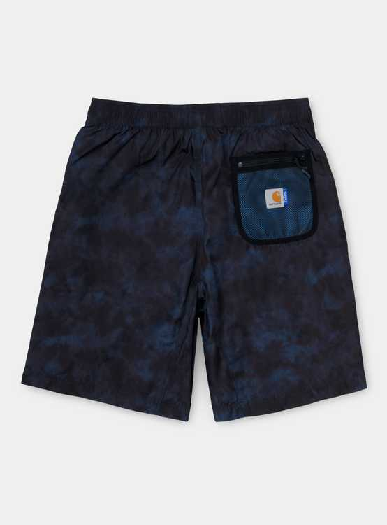
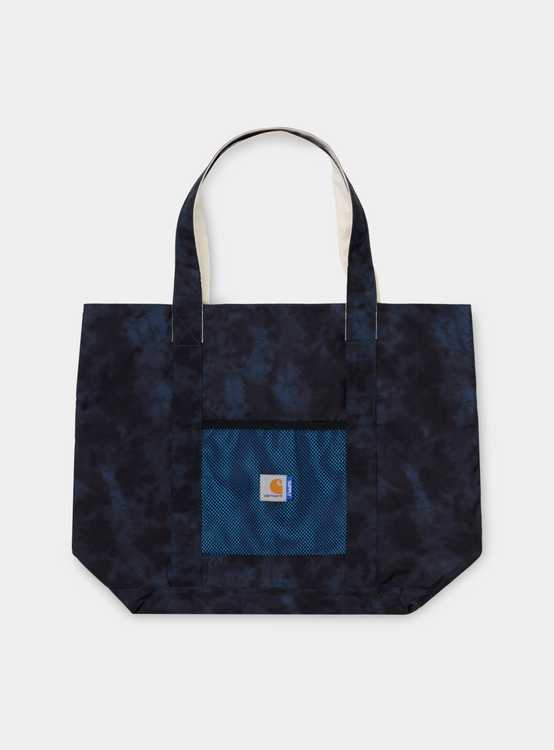
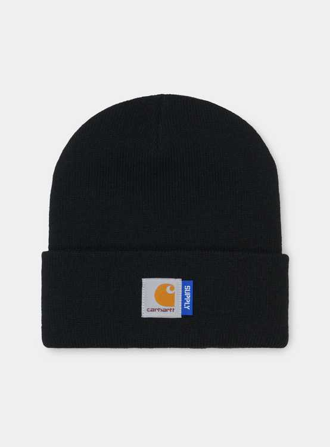
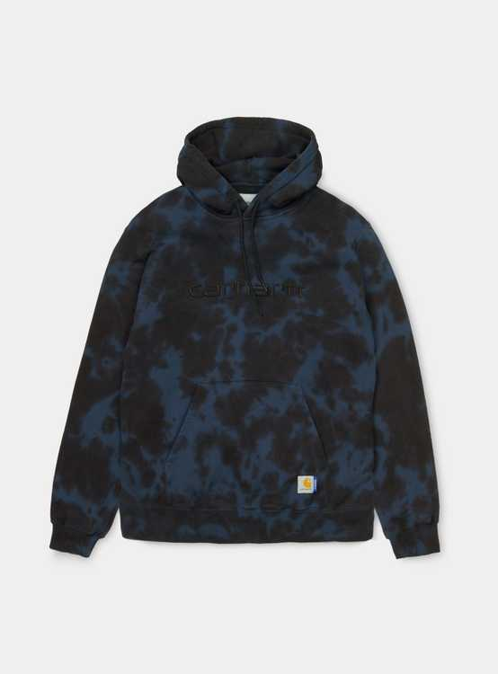
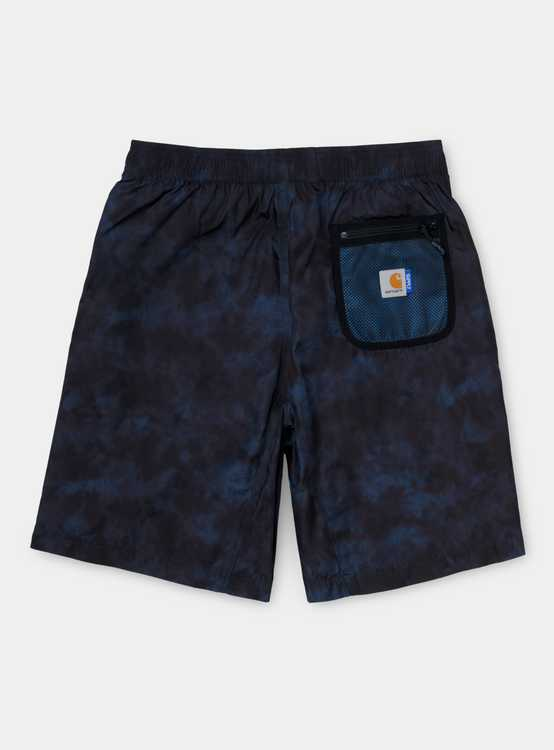
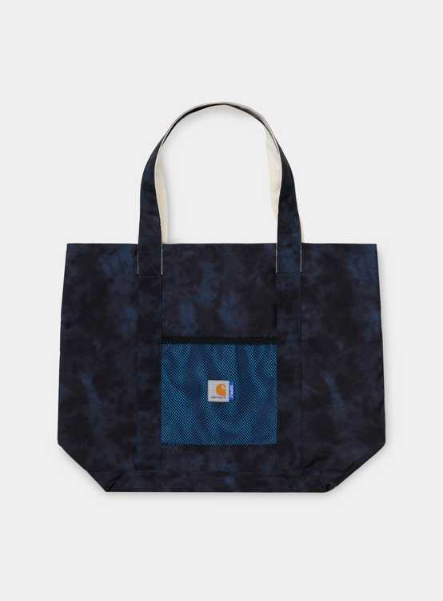
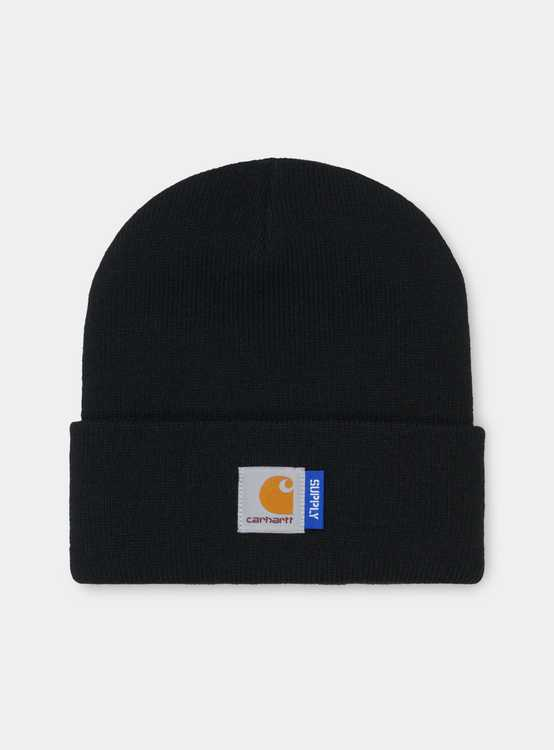

Carhartt WIP X SUPPLY
14 Sep-2020
Founded in 2002, SUPPLY is the brainchild of Shawn Yates, who first began importing Carhartt WIP to Australia at the end of 1998, before going on to help launch Carhartt WIP’s original Sydney store and handle distribution for the region. SUPPLY has since grown to become a multi-faceted retailer, known for its DIY spirit, eclectic mix of brands, and culture-led approach to collaborations, which has seen them work with the likes of Suicidal Tendencies, iconic 80s punk illustrator Ben Brown, and Dogtown Skates’ Wes Humpston.
This capsule collection sees SUPPLY reinterpret various iconic Carhartt WIP pieces, while also taking inspiration from vintage trail garments. Several pieces bear a unique tie dye treatment that creates a iridescent, mottled effect when applied to lightweight polyester. This includes a five panel cap with mesh paneling and a Hooded Windbreaker, complete with a detachable mesh pocket that can be turned into a cross-body bag. Similar detailing and motifs can also be found on the accompanying Trail Short and Reversible Shopper tote bag. There are further nods to the unique dye technique, which makes up the foundation of the collection, in the form of a tie dyed t-shirt and hoodie – the print appearing murkier and more muted when laid over cotton. There’s also the inclusion of two heavyweight pigment dyed hoodies with tonal embroidery.
The collection is rounded off with some co-branded basics, including the Short Watch Cap beanie and two loose-cut pocket t-shirts, which have also been pigment dyed.
 






